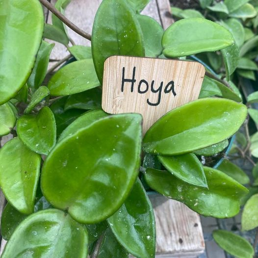
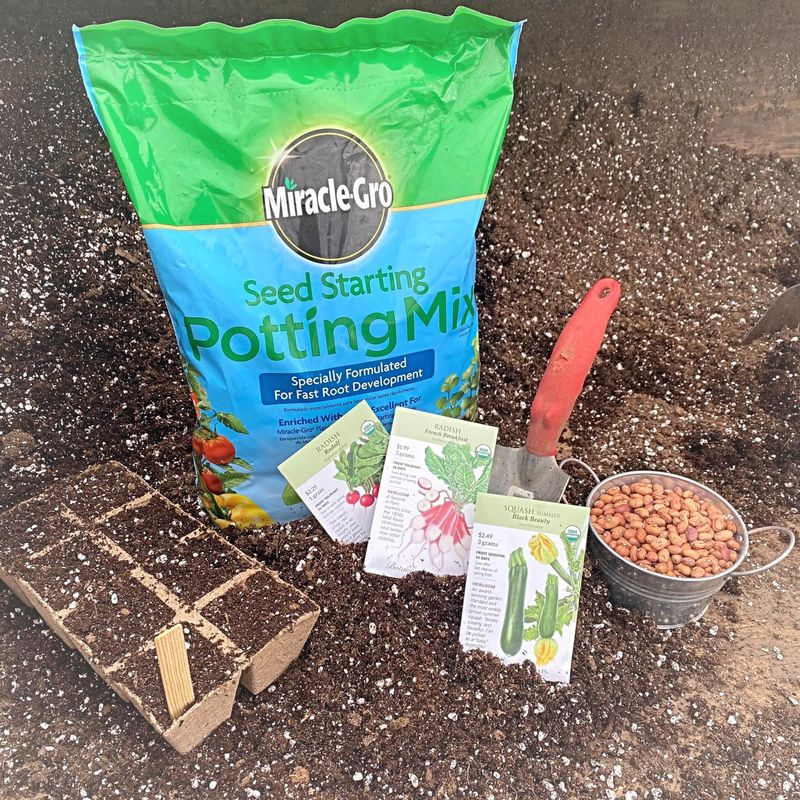
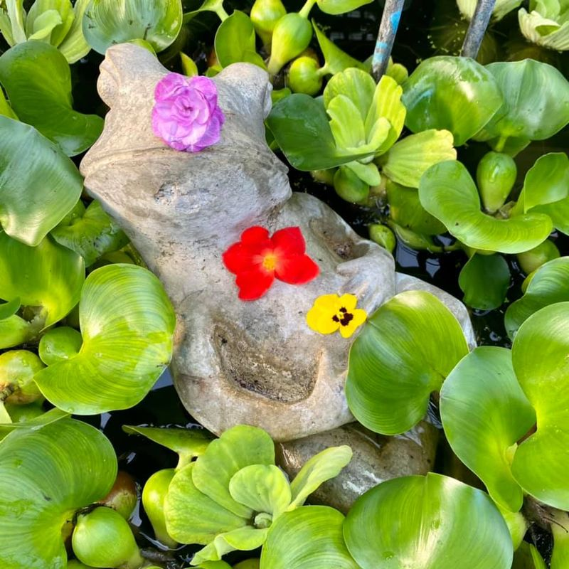
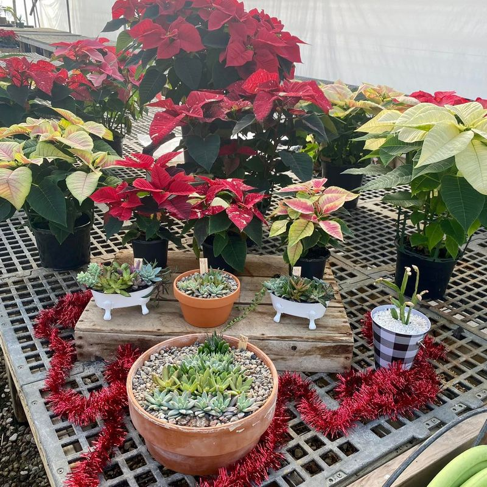
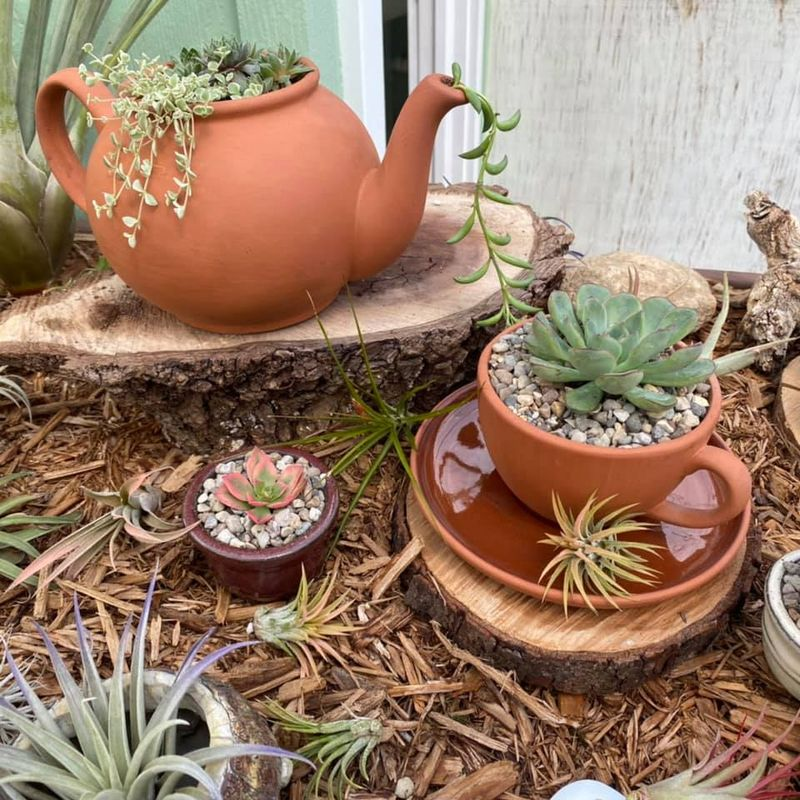

March – May
Spring
- Annuals in packs and pots
- Perennials by the hundreds
- Hanging baskets
- Vegetable and herb transplants
- Seed potatoes, onion sets, bulk seed
- Fruit trees, berries and grapes
Greenhouse & nursery · Crawfordsville, Indiana
Family-owned and operated, with one of the area’s largest selections of houseplants, succulents and cacti, plus annuals, perennials, trees, shrubs, vegetables and everything to plant them in.



We’re a mom-and-pop greenhouse with more than forty years on Ladoga Road. You’ll find healthy plants, honest advice about what grows here, and a family history in greenhouses that goes back to 1909.

Every plant that comes through our doors is checked for pests and disease. Unhealthy plants are pulled and isolated so the problem doesn’t spread. We carry warranties on many products, and if we don’t have something, we can usually order it.
Our storyShop by category







Through the year
The greenhouse never closes for the winter, but what we carry changes with the calendar.
March – May
June – August
September – November

November – February
From the catalog

More than plants

Drop off your planters. After a talk with our in-house designer, we plant a custom arrangement made to bloom all season.
How it worksPlanting, bed cleanups, mulch, hardscaping and design, done by Yund Outdoor’s crew with plants and materials from our yard.
Landscaping services
Bulk and bagged mulch in several colors, river rock, limestone, driveway gravel, boulders, sand and topsoil.
MaterialsOur story
The Wilson family started growing in Roachdale in 1909. The Davidsons started their own greenhouse in 1977. In 1979 the two joined up and built the greenhouse that still stands on Ladoga Road.
Read the whole historyThe garden journal
Trees & shrubs 9 min read
How to choose the right shade, flowering and evergreen trees for central Indiana yards, and plant them correctly: site, size, native options, planting depth, watering and mulch.
Planning 8 min read
Flowers & perennials 8 min read
Kind words
It was my first time in there today, and I was amazed at the selection of just about everything they had. I cannot wait to go back! Everything was healthy and lovely.
I absolutely LOVE Davidson’s! Everyone there is very friendly and always quick to help with anything, very knowledgeable staff! I recommend this greenhouse/ nursery, you will not be disappointed!
Friendly helpful staff, so many plants, great selection, so many varieties good prices for good looking plants, the rest is up to me.
I loved my first visit here. The lovely folks who work and own this place are super nice. I will most certainly be coming back soon for more of their plants as well! The lovely lady who helped me grab my tomatoes while I held my baby was awesome and I honestly wish I had neighbors like these people.
Went for the fall festival in spite of the rain we had a great time.
Super helpful, very nice, clean and professional.
❤ love! Very helpful and informative!
Davidsons has a great selection of beautiful plants.
Great place friendly people
Reviews as posted on our original website. Read them all.
Plan a visit